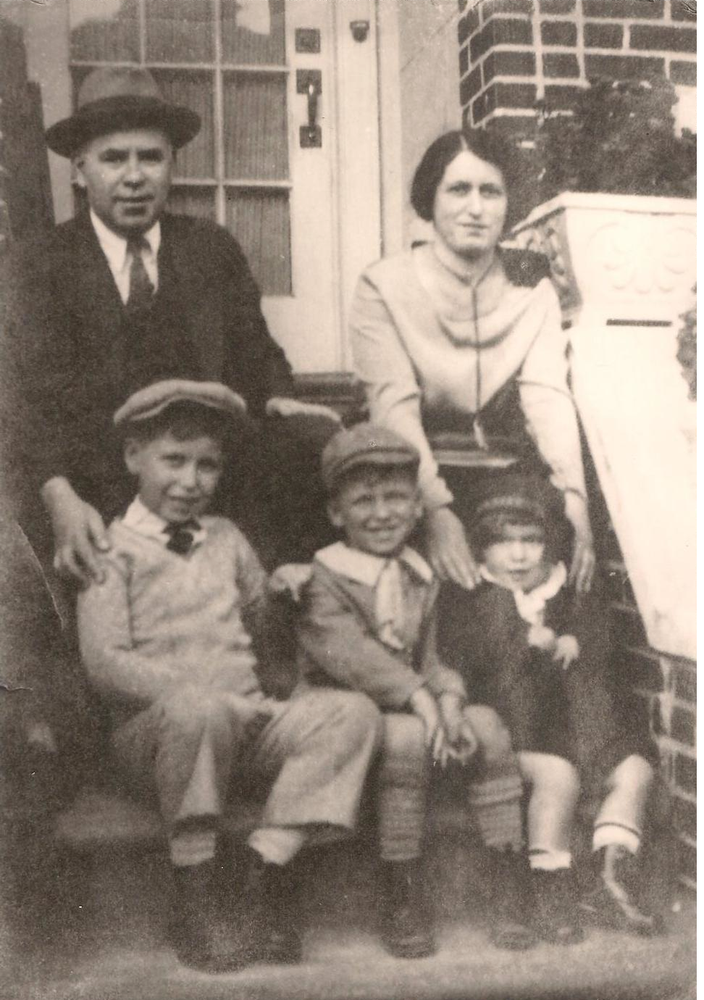

<div class="modal fade" id="nyModal" tabindex="-1" role="dialog" aria-labelledby="nyModal" aria-hidden="true">
    <div class="modal-dialog">
        <div class="modal-content">
            <div class="modal-header">
                <h1 class="modal-title">New York</h1>
            </div>
            <div class="modal-body">
                
                <b>1927 ~ Brooklyn, NY:</b>
                My grandfather Harry Trager (left) with his big brother Morris (right) in front of their home on Atkins Avenue. Harry grew up to be an architect and civil engineer under the famous Robert Moses. My mother insists that engineering runs in the family, but she can't even turn on a computer.
                
                <b>1928 ~ Brooklyn, NY:</b>
                My grandmother (bottom right) with her family on the stoop of their humble abode.
            </div>
            <div class="modal-footer">
                <a href="#" class="button" data-dismiss="modal">Close</a>
             </div>
        </div>
    </div>
</div>